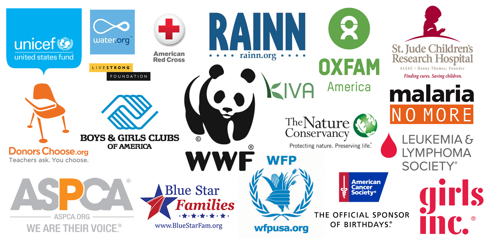

Organizational Impact
Scale without the bottleneck.
We solve the problem of an administrative bottleneck for NGOs. By automating the screening process, we allow non-profits to scale their impact without needing more human capital.


Risks and Impacts
Every system has trade-offs. How we combat them:
We recognize that ease of use isn't enough for widespread adoption. If students don't perceive the Impact Passport as a legitimate professional currency, adoption will stall. We mitigate this through institutional partnerships with universities and recruiters to ensure our digital credentials hold real-world weight in the job market.
A primary risk in AI-driven platforms is that community service could feel cold, almost like a transactional exchange. Furthermore, standard algorithms often suffer from "Pedigree Bias," where students from higher-resource backgrounds are prioritized by the system.
We counteract this through a two-pronged design:
- Human-Centric Connection: The AI is strictly an intermediary that only handles the complex logistics of matching organizations to people, and it leaves the service itself entirely focused on human-to-human interaction.
- Algorithmic Equity: Our Skill-Graph is intentionally tuned to weigh lived experiences as well as community-based knowledge equally with traditional academic credentials. This ensures that the engine identifies talent based on actual capability rather than just resume prestige.
To prevent displacing entry-level paid roles, our system identifies unmet needs — tasks that NGOs currently leave undone due to budget constraints. We don't replace jobs; we fill the gaps that hold community progress back.
Meet the Team
The CivicMatch Team.
Pritish Shan
Lead System Architect
View contributions →Daniel Chen
Strategic Analyst
View contributions →Jacqueline Zang
Impact & Social Theory Lead
View contributions →